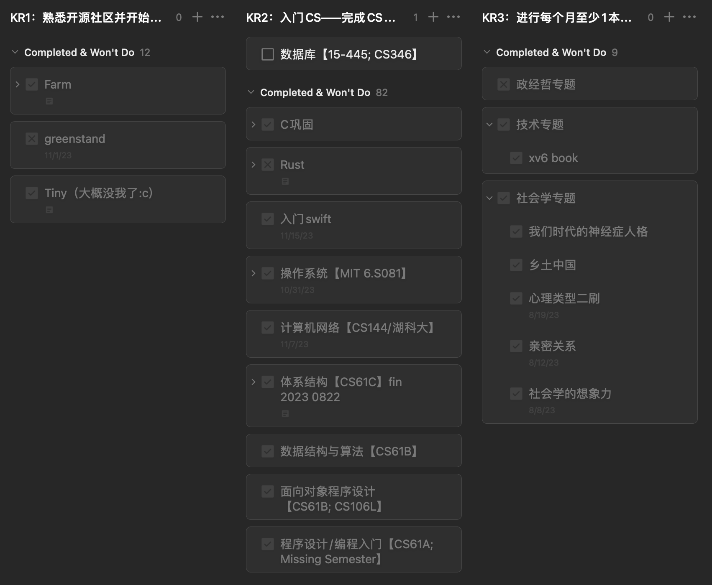
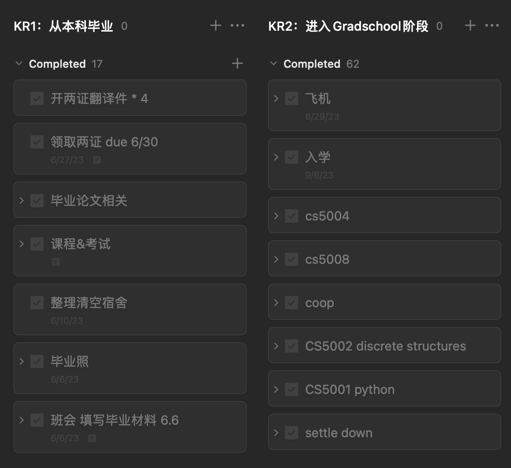

TLDR：本文复盘了一个从2023年6月建立起的短期规划截至2024年2月的完成情况。
前言
奇怪的复盘时间点
之所以选择在这个意味不明的时间节点进行review，是因为每年的2-5月是我学生生活的闲季，差不多是前半年学业考试结束和招聘季尘埃落定，后半年实习和秋招还未开始的时候。相比之下，每年年中年底或农历新年的时候往往处于水深火热中，心境上并不适合回顾过去、展望未来。
采用的人生管理模型
去年年中突发奇想地整理了年度目标管理，基于一个称为“生命之花”的模型和OKR机制系统化了曾经零散的年度flag。
这个模型把人生分为8个模块，包括个人成长、职业发展、财务、休闲娱乐、健康等。在实践时，我根据个人情况做了调整，去掉了暂时不打算顾及的模块，最后剩下的七个模块分别是：个人成长、学业、职业发展、个人健康、娱乐休闲、人际关系、财务管理。
具体参考的是这篇少数派的文章：毕业倒计时，我这样用 OKR 进行目标管理。
制定目标时的考量
复盘方法
因为在立项（？嗯）时没有写文章介绍每个模块的OKR，所以会先开诚布公地展示一下去年六月各个部分的规划，然后复盘一下半年来的达成情况。
01 个人成长
我对这半年个人成长方面的期望是打好CS基础、接触tech community和持续培养人文素养这三块，由此设定了三个KR（Key Result）。
KR1：接触开源社区
我对接触开源社区这个KR的定义是“学习过就算，能提pr更好”。
关于计划里的三个项目：Farm和Tiny是23年五六月份时闲来无事筹划着参与GSOC和开源之下这样的开源实习时学习的前端/前端infra的项目。Greenstand是来美上学后一次招募贡献者的宣讲时听说的项目。
【完成情况：100%】
- Farm：这是一个前端打包工具，core是Rust写的，外面用js/ts写了一层api调用core的功能。暑假里我学了下js/ts部分的代码库，提交了几次pr，勉强算有一点但不多的实质性贡献
- Tiny：为了申请开源之夏的项目而仔细学习的前端组件库，借此机会熟悉了几个前端框架Vue&React。学是学了，但是后来申请没选上，所以没有进一步做贡献。
- Greenstand：如果我没理解错，这其实是一个软件公司的开源产品。但开学后时间有限，我并没有后续深入了解这个产品，中途放弃了这个目标。
KR2：入门CS——完成CS基础课
个人的转码规划并不是xhs刷题三月上岸类型的，而是把自己当作晚开始几年的半科班，通过自学开源的知名网课把大部分专业基础课都学一遍，然后才开始进行求职方面的努力。
【完成情况：90%】
总的来说是基本完成了。照着csdiy，从23年2月开始截止24年2月分门别类地学完了:
- 编程入门（cs61a），
- 面向对象设计/数据结构与算法（cs61b和学校的cs5004），
- 计算机体系结构（cs61c和学校的cs5008），
- 操作系统（MIT 6.S081），
- 计算机网络（b站的湖科大网课和一点点cs144）。
大体如图所示，几门大课都完成了能写的所有lab、homework和project并记了些笔记，可以在我的github里找到相应代码仓库/在blog里找到部分笔记post。只有一门数据库没有时间践行，因为学了没地方用不如不学，所以打算留到或许有空的下下个半年。
KR3：进行每个月至少1本书的专题阅读
虽然转专业到了理工科，但在比较有限的业余时间里，我并不想因为一心追求技术上的精进而变成精神贫瘠的文化沙漠，因此我打算延续本科时的阅读习惯，读一些non-fiction涨涨见识。
【完成情况：100%】
-
社会学的书读完了6本。
-
技术方面，在学操作系统课的时候顺便读完了xv6论文，也勉强算1本。
-
PPE的阅读计划是一点没实现，只有2-3本在读的，可能还是需要更加大块的时间专注地读完。
-
其实还读了2本严肃小说、2本认知类的nonfic和14本轻小说嗯。，但这大概不属于“成长”规划范畴内，就不记录了。
02 学业
学业上的目标无非是平滑地从本科生过渡到研究生，完成课业和各种程序性的事情，因为自学才是真正的「学业」，所以这块没什么好多说的。关于这段经历我记录过一些，随机分布在毕业总结、年度总结和随笔里。
更重要的是无法体现在todo list上的心态转变，因为没有读博的打算，所以某种意义上，从本科毕业的那一刻起我就已经踏出象牙塔，需要直面社会现实了。
KR1：本科毕业
【完成情况：100%】
- 上完了最后几门专业课
- 完成了毕业论文
- 走完了毕业材料、两证的流程（四年=两张纸）
KR2：进入研究生阶段
【完成情况：100%】
- 顺利落地、办各种手续、入学
- 上了四门课（项目规定前两个学期只能上四门）
03 职业发展
KR1：找到7/10分以上的实习
个人长期的规划并不是留美，但我仍然认为利用好留学期间的机会积攒一定的海外工业界经验对我没有坏处，所以职业发展上的第一个KR就是在第一年就找到一份尚可的summer/fall的实习。
虽然所在的项目并不要求第一年就找实习事实上大部分人都是第二年开始找实习，但根据我数次转行的经验，最理想的情况还是能尽早找到转行第一份实习，这样后续能从容些。打分参考上面说的文章，一共五个方面，每个方面有两分。
- 行业：行业发展前景，是夕阳产业、新兴产业还是已经成熟规模化的产业
- 企业：企业在该赛道内的地位
- 职业：在企业做什么，属于什么序列，该序列的发展前景
- 城市：个人喜好与城市发展前景，偏主观
- 待遇：包括总包薪水与隐性福利
【完成情况：100%】
确实找到了一份暑期实习，甚至我觉得比预期的更好一点。
数据上，在来之前我的预期是1%的投递-offer转化率，可能实际市场还比我想的差些。23年9月到24年2月共投递494~个岗位，收到116~封拒信，9个oa（3个非白嫖），3个VO1，1个VO2-VO3，和最后的1个offer。
即使早就开始不断提醒自己，还是犯了不少让我忏悔的错误：
1）对于特定几家大厂，因为社恐+拖延没有去找内推。虽然这次被拒显然不是因为少了内推，但在下次秋招这是个可优化的点。
2）对于某司，早知道早投的重要性，也单独为此制定了time-specific的计划，但是还是拖了十天改简历补项目。根据后续的身边统计学，这可能就是我的key failure factor。
3）对于某T姓厂，没理清其和B姓厂的关系，导致错过了最好的投递时间。
4）lc刷了很多，但刷的并不好，甚至初见的medium-hard都不一定能解出来。
2和3几乎是这次秋招唯二的捞人大头，虽然我一开始没有非这个级别不可的执念，但因为自己信息收集和执行力不足的原因错过面试的机会还是有点可惜的。
KR2：完成一份7分的简历
设定目标为7分是因为转专业的属性和相关实习的缺乏使我目前的简历天花板就在7分或更低。在这个范围内，我希望尽可能大到整体视觉结构，小到每个单词，都能打磨到它的上限（基于数个业内人士的评判标准）。
拆解目标后我计划做的几件事依次是：
- 首先是调查市场主流tech stack需求，需要看看各司JD里的说法和过往前辈的经验；
- 其次根据主流技术栈，从0.5开始补充pj经历，我当时想的配置是2个全栈、一个偏OS的低层轮子项目以及一个mobile，外加已有的一个OOD轮子软件项目；
- 然后是搜集比较优秀的candidate的简历作为整体结构和细节条目的参考；
- 最后才是撰写和修改。本来想试试ABtest，但这么差的市场怎么test结局都是ghost（
【完成情况：100%】
实际就是按照计划那么做的，只是设想的项目并没有余裕全部做完。
简历一共有7-8版，几乎每月都会改出一个大版本。中间和最后大致定版后一共找过三位career advisor改简历，比较统一的feedback是认为它优于她们自己找到第一份bigname前的简历，由此确认自己这方面算是准备得差不多了，剩下听天由命。
KR3：根据兴趣确认发展方向
技术方向实在多得离谱，我至今好像还没完全理解各个方向干什么。就我一年前的有限认知来说，想接触下试试的是：
- 后端主流语言+框架，也就是微服务CRUD什么的
- 后端最近比较热门/新兴的方向：云服务或infra/分布式/大模型应用
- 前端框架
- …?
【完成情况：60%】
第一条通过做好几个全栈项目算是比较熟悉了，对此并没有太多负面或者正面的感想。
第二条的云服务只有浅浅接触过一点，可能会在实习时接触点应用级别的；大模型应用方面，最近参加了个WIP的和外校phd&几个同学合作的多模态大模型应用项目，打算盖棺再定论；分布式这块暂时没想好为什么&怎么入门&入门以后干什么，所以完全搁置了。
第三条的前端框架通过开源项目/自己的小项目里熟悉了一下，纯前端是唯一一个我明确地不太愿意作为职业从事的方向。我很喜欢前端可视的编程体验，但js函数式编程的抽象程度好像不高，给我一种非常杂乱、不是很systematic的感觉，写起来有点折磨。
KR4：学完工业主流技术栈
回过头来看，这是个很突兀的KR，完全可以并入KR3。当时初衷可能是想要提前预习国内的八股知识，以免不得不找国内实习时学得手忙脚乱。
【完成情况：60%】
学了的和还没学的都很多。学习过程中的最大体会是学了不经常用的技术栈真的不如不学，或者到了要用的时候现学。
学了的：
- Java重新系统过了一遍
- Java web
- SSM（Spring + Spring Boot + Spring MVC + Mybatis plus）
- Spring Cloud生态里的（redis6 + docker 剩下还没学）
- nginx
- rabbitmq部分
- 设计模式
04 个人健康
我对健康的期望是：精神稳定+饮食运动管理。因为没什么可量化的，相比之前的硬核模块，后面的三四个都相当随意。
KR1：保持精神稳定健康
【完成情况：100%】
即使搞砸了不少事、大半年没有任何收获，也能默念着tomorrow is another day平和地度过一个个夜晚，个人忙季历史上心态最好、内核最稳定的一次。
KR2：fitness
有两个小目标：
- 一周至少运动1次
- 保持90%的日子多食少餐
【完成情况：0%】
完成度史低.jpg，忙起来就很难顾及到所有方面呢，
KR3：克服完美主义
【完成情况：?】
在随想里应该提到过，这是一个从大学开始努力改善中的思维Bug。最新进展：
- 时刻提醒自己保持self-compassion
- 每天比昨天好一点点就够了
可能正是修正了一点的缘故，这段时间才一直精神稳定健康。
05 娱乐休闲
娱乐休闲的kr其实并没有很“认真”地作为一个事项来对待，只是放在一起时刻提醒自己——不要忘记休息！
KR1：在三个国家旅游
【完成情况：66%】
这几个月在…留下了旅行足迹：
- 美国波士顿、奥兰多、费城
- 日本东京、大阪、京都、金泽、高山、富山
如果算上海拉鲁的话就成功集齐三个国家了！
KR2：探索好玩的游戏！
【完成情况：100%】
不算某些手游，今年只通（？）了两部游戏：
-
塞尔达王国之泪
-
双人成行
06 人际关系
KR1：了解八维各个功能主导人的思维模式
【完成情况：100%】
纯粹出于个人对荣格八维的兴趣，也是出于学习他人思维方式的目的，这期间抓住机会和八种维度主导的人聊天实际情况是等别人和我聊天、，发现不同主导型的default思考方式比我想的差异大很多，有些我甚至很难理解；同时也发现自己的很多想法也不是人们共有的。接近他者的真相是很难的事情，人会不自觉把自我投射到他人身上。正因如此，我觉得这种交流是有意义的，第一在于纠正成见，第二在于在确认异同时找到个体性。
KR2是另一条长期记录贴，但是最终没有记录完整，所以略
KR3：收集50个拒绝
因为听说被拒绝多了会变得更加自信从容，所以无厘头地订了个这种目标。记得还有个youtube上的挑战是关于这个的，有趣的是有时看着必定被拒的事情反倒真的成功了。
【完成情况：100%】
算上拒信的话早就不止50了hhh下次还打算继续尝试类似目标，但是会提前想好todo。
07 财务管理
KR：持续记账
【完成度：0%】
因为没什么消费欲望，恩格尔系数接近百分百，到后来演变成看一眼微信账单（weee）就知道90%的开销了，于是干脆不手动记了..
不过我很同意管理财富=管理自由这件事，只是现在还处于（花在理财上的时间价值）>（理财本身提供的价值）的阶段。等到有更多主动收入后这一块会有进一步的打算。
总结
这是一次「人生管理实验」，或者说行为艺术也行。我知道规划对一些人来说是摆脱迷茫的手段，对另一些人来说是限制选择的桎梏，这种用条条框框切割人生的方式不适合所有人，只是我已经习惯了，甚至因为太顺手了，近几年还打算继续下去。
后续可能不会以半年为周期，因为在实践的时候发现哪怕非常轮廓式的规划都赶不上现实的变化。初步想法是设定半年内需要完成的milestone，然后以两个月到一个季度为周期复盘，方便灵活变通。
话说回来，复盘还是要有始有终，粗粗计算了含权重（25/20/30/10/10/5/0）的总体的完成度，大概是85%，仍然贯彻了我「达到完美计划的八成」的虎头蛇尾风格。短期最重要的事情基本都顺利完成了，就是对健康生活的关注有待提高，毕竟长期健康第一。下次一定！